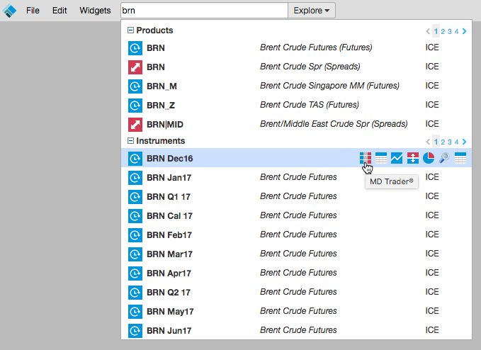
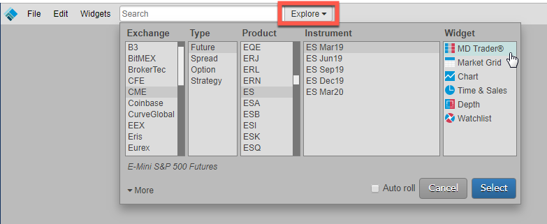
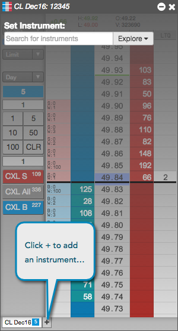
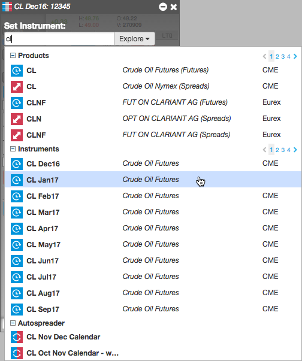
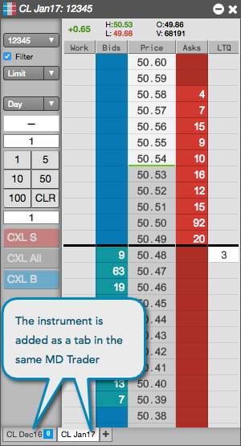

You can use Search or Market Explorer to add instruments to a new or existing MD Trader widget.
To use search to launch MD Trader:
Enter an exchange, product type, product, symbol, or instrument name in the Search box in the workspace title bar.
Tip: You can also enter keywords to search for an instrument (e.g., natural gas, soybeans, oil, etc.).
Hover over the product name or instrument name to view a list of widgets that you can open and click the MD Trader icon.

Click Explore next to the Search box in the title bar.
Select an exchange, product type, product, and instrument, and click MD Trader® in the Widgets section.
Tip: Use Shift-click to select multiple instruments for a product, or just select the product to open all instruments for that product.

Check the Auto Roll checkbox to automatically roll the instrument after its expiry.
Click Select.
MD Trader Grid opens populated with market data for the selected instrument.
Click the + in an existing tab in MD Trader.

Search or click Explore to find and select an instrument. Only one instrument can be added per tab.

The selected instrument is added to MD Trader.
